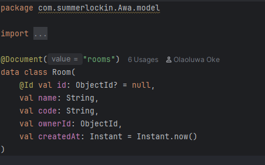

Day 1 - Implementing the Room Entity in Awa
Olaoluwa Oke| 19 June 2025
A few hours into writing the Room model, I realized I was literally describing a household. like the shape of shared space
There’s a concept in HCI called an interface metaphor. It’s when you design something in code that mimics how things work in real life, so people don’t have to re-learn everything from scratch
Anyways, So I thought- what would a household have? . at least , THIS type of household
Well, it would have a name. Most houses don’t, but this one needs to, It would have an owner or overseer. Someone who started the space and feels a tiny bit responsible for it,It would have members. It also would have a key, something like an invite code. And finally, it would have a timestamp. (dont ask me what the equivalent of that is)
So I wrote this:

Each room has an ownerId (the user who created it), and a list of memberIds. A room doesn’t exist in isolation someone starts it, and others are invited in. The inviteCode is like a key. I didn’t want it to be random long gibberish id, so I wrote a short utility:
fun generateInviteCode(length: Int = 6): String {
val chars = ('a'..'z') + ('0'..'9')
return (1..length).map { chars.random() }.joinToString("")
}
Readable. Shareable
Before wiring up the service layer, I created a RoomRepository that extends MongoRepository with one query method " findByCode" .
Room Creation & Join Flow: I wrote the RoomService to handle the logic of:
->creating a room,
->generating a unique invite code,
->adding the creator as the owner and first member.
When someone else joins using the invite code, the flow:
->fetches the room by code,
->checks if the user is already a member,
->appends them to the memberIds,
->updates their roomId field in the User collection.
Catch you in the part 2 lol
Page 1 of 1
© Olaoluwa